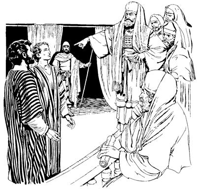

Yahudi nimi sembe tam kareptopnangdi Petrusap Yohanesap kop aeag tobongkipsieka (4:1-12)
4
1 Petrusap Yohanesapti nimi maikno yubu ambarelamsirekpa, Yahudi nimiri sae agha memnang saeag neneropba, Allah sembe pairopnangapa, Allahri Ae yae ua uropnang yin saleropnang sikindoap, Saduki nimiapb sin phendeag yaek. 2 Yaekti ka'elamsiekpa, Petrusap Yohanesapti, “Nimi etneri, Yesusag ‘sikne,’ senelamleri, tebale tanena Yesus kamag tao saog uro kamag tanep,” aro nimi maikno ambarelamsirek. Ambarelamsirekpa, ka'ebaekti memnang Allah sembe pairopnangap, Allahri Ae yae ua uropnang yin saleropnang sikindoap, Saduki nimi tanekoap yo sembaek. 3 Yo sembaekti, “Sin phende abeneko tam kareptopnang whingag pabhukap,” sembaek aghana, imbaogpa, “Ambhum samoro yaberi, tam kareptopnang whingag pabhukap,” aro sae kaupto kop aeag tobongkipsiek. 4 Tobongkipsiek aghana, Yesus sembe ambarelamsirekne nimi maikno tanekori ka'elamek. Ka'elamekti seneraglamekti, “Sin phenderi ambarelamsirangne sembe sik uro ambarelamsirang,” aro seneraglamek. “Sik uro ambarelamsirang,” aro seneragtop nimi taneko wamekne, kabuni aghabog a'iliro agha teng-tengne (5.000) wamek.5-6 Mabeka kwelekaogne memnang Yahudi nimi saelba uhiropnangap, Yahudi nong nimi nubunangap, Musari samenag mome tobogne ambatsiropnangap, memne Allah sembe pairopnang sikini nubungec Hanasap, eldi nimi sisa nhonne, Kayafas, Yohanes, Aleksander, ora nimiap, “Petrusap Yohanesap sembe tam karebaukap,” aro as Yerusalem winiptaek. 7 Winiptaekti Petrusap Yohanesap abeneko enero poa yahiekpa, nimi poloro winiptangkamek nang tanekori sinag hailamsiekti, “Nimi etne mikibag agha? Nimi etne siag agha ulamdomdi, nimi wali nenelamsirom?” aro haibahiek.
8 Wene aro haibahiekpa, Allah Eldamne Yame Walingeri Petrus wana salero el nongag wa'alamogti, mikipne piamogpa, haibahiekne sembe Petrus sekogti ambarelamsiogti, “Nani yabo nimi nubunangap, nani yabo nimi saelbamsilom nangap, wene na yubu lemnunne ka'eamlulom! 9 Sumene nimi yan malinge nhon yepnamne nene wali uanam aghana, ‘Ambatsisereng,’ aro hailamsilomdi, ‘Nimi etne mikibag nimi nene yan wali nembarom?’ aro nunag hailamsilom,” seog.
10 Wene seogti, “A'un Israel nimiap, a'un nimi ni wamlom nimi tane el tahile. Allahri ‘Mog so'oag nimi taulbahilulam,’ aro webogne Nasaretne poneko si Yesus engeropneag moloro ul tongolamnam. Yesus poneko a'undi kalag sipto olobom aghana, Allahri nimi teptobag agha nen kamag nembao. Kamag nembaonge ponekoag molbanamba, nimi nene wali nembalba, yan wali talne a'un whingag sekamlari wamla,” seog.
11-12 Nen ambarelamsiogti, “Samenag Yesus anam mangkaek komag Allahri yubuag Yesus sembe mome tobogne ane:
‘A'un ae sorop nimiri, “Yangan kirik nubunge nene mali,” aro toboghailum,
aghana yangan kirik katne nhonog sunuropne tao,’ aro mome tobog.
Israel nimi nubunang, ae sorop nimiri yangan kirik katne samenag toboghaiek saog uro Yesus wa'epto toboghaom aghana Yesus poneko Allahri, ‘El mori nimi mog so'oag nimi taulbahinep,’ aro Yesus yangan kirik katne saog uro wepto sekirog. Nimi mog so'oag nimi malia uroba sembe ‘Allahri opsileag,’ aro Yesusti taulbahinep. Im tamag mog so'o sirikag-sirikag nimi taulbahinepne ot nhonog si Yesus engeropne wamla. Elag mololamnaba, Eldi nu taulbahinep. Elap sunsunumne nhon wamla kom,” seog.
Petrusap Yohanesap sembe welaro uaukap aro yubu lebeka (4:13-22)
13 Wene seogpa, nimi yubu tam kareptopnang poloro winiptaek nimi tanekori Petrusap Yohanesap sembe, “Sin mome lerop kom nimi apna, kembiag agha el urop kom nimi sao wamdang. Nubunang ambarelamsirang aghana sin log kom uro lero ulamdang,” sembaekti, “Yaghe, mane agha ulamdang,” alamek. “Yesusap nhon yabalamdongne sin phende,” aro el wamsiog. 14 Nimi yan wali taogne neneko sin Petrusap Yohanesap peramag sekamogpa, ibekti, “Nuri sinag sa'a sukap kom,” aro yubu koma wamek.
15 Wameka, “A'un asag lambalulom,” aro wene seekpa, lambaekpa Yahudi nimi sembe yubu tam kareptopnang Mahkamah Agama nimi mo yubu lelamekti, 16 “Nimi phende abeneri Allah Eldamneri uanepne nimiri uanep komne uarongba, Yerusalem nimi ni el taongba, nuri, ‘Sindi lelamdangne orolenange lelamdang,’ aro orolenange nuri lemnep kom saog wamla. Ane sembe, nimi abeneag nuri sa'ange agha ambatsukap? 17 Sindi alnibarongne nene nimi maiknori ka'ebaikpa, nubu taleag, nimi abeneag walamsiberi, ‘ “Allahri nia mangkina si Yesus poneko saeag nembao,” aro ambatsiseng kom,’ aro yubu mikip uro wembahukap,” seek.
18 Wene seekti, sin abenekoag “Wa'al alulom,” aro yopsiekti, “Yesus sembe ambarelamsiromne sik komne ambarelamsirom. Nimiag yubu lelamtumundi, ‘Allahri nia mangkina si Yesus poneko saeag nembao,’ aro ambatsiseng kom,” aro wembahiek.

Yubu tam kareptopnang Mahkamah Agama nimiri Petrusap Yohanesap “Ambatsiseng kom,” aro wembahiek. (ACT 4.18)
19 Wembahiek aghana Petrusap Yohanesapti, “A'undam nimiri wanaag agha senaragsu. Nelagha Allah whingag wali: A'un yubu mombolag wamukap to, Allah yubu mombolag wamukap to? Allah whingag uaukap sembalomne nelagha wali sembamlom? 20 Allahri uaonge sembe nimiag ambatsibe tanena Allah whingag wali. Ane sembe aoag agha ka'ebabori, haingdi babe ibobonge nene sembe nimi ambatsin koma wamnep kom,” serek.
21 Wene serekpa, tam kareptopnang taneko yubu lenne orog. Yubu mikip uro sin phende abeneko wembahiekti, “Pururom,” aro yag lambahiek. Nimi wali nembarekne neneko ibekti, nimi maiknori Allah omeklamek. Tam kareptopnangdi Allah omeklameka ipsiekti, sindi, “Sin phendeag huaukap,” alamek. Allah omeklameka ipsiekti, tam kareptopnangdi “Logti tam lolohinne orogti,” lipsiek. 22 Lipsieknena, nimi yan malinge wali nembarek nimi eneko mangkaekne hengkun yag tangom kom tangom alamogha teng nhon eptopne naualbare (40) taogpa, Allah Eldamneri uanepne saog uro wali nembarekpa, tam kareptopnangdi “Uaukap” sembaekne, “Tam lolohinne orogti,” lipsiek.
Yesusag “Sikne” aro seneragtop nimiri Allahag molona molbaeka (4:23-31)
23 Petrusap Yohanesap “Pururom,” aro sae lipsiekpa, sikinkaboag pirekti, memnang Allah sembe pairopnang sikindo yaboap, Yahudi nimi sikini yaboapti lebekne “Nunag undo-undo wene seangdi, wembahiang,” aro sikinkaboag ambatsirek. 24 Ambatsirekpa sikinkabori ka'ebaekti, sin ma'aptangto Allah omekto mololamekti, “Nuni Allah nia mangkina saelbamlamne, Andi imap, so'oap, magap nia mangkina ni Andi sumbalum. 25 Andi Andamne Yame Walinge neneko Andi arukna nuni Daud pere agha elag piplumne ambatsiogne ane,
‘Yahudi sisa kom nimi Allah omektop kom nimi tala-tala wamangneri sa'ambe yanghang alamsiang?
Sa'a sembe as tala-tala wamangneri, “Undo-undo uaukap,” senelamangdi lelamang aghana, uro yabilul kom?
26 Nuni Allahri “Taulbahimendi, saelbamsululam,” aro wepto aogne ot nhon.
Allahri wepto aog aghana mog so'oag yubu sia leropnang tanekoap, sikin tamag salehiropnangapti, “Karong,” aro poloro winilamang.
Poloro winilamangdi, Nuni Allahap, Eldamneri wepto aogneap “Mal tabaukap,” aro yin singilamsiangdi, wamang,’
aro Daudti samenag ambatsiog.
27 Samenag ambatsiogne sunsunum uro sik uro yabiog. Anmed sol walinge Andi “Taluro saelbamsululam” aro wepto alumne Yesus poneko ‘Obukap,’ aro Herodesap, Pontius Pilatusap, Yahudi sisa kom nimiri Allah omektop komnangap, Israel nimiap, as eneag poloro winiptaong. 28 Sin winiptaong nimi tanekori ‘Uaukap,’ sembaongdi, ulamongne, An Sae Mikipne nenekori samenag agha ‘Wali undo uaukang,’ sembalumne saog uro ulamong. 29 Wene Nuni Allah, Yahudi nimi tam kareptopnang taneri nu Yesusag ‘Sikne’ aro seneragtop nimi sembe ‘A'un opsukap' alamang. ‘Opsukap,’ alamangdi, walamsiangba nu Andi kembahi. Nuri ‘Anenge yubu log kom uro ambarelamsukap,’ aro An arukna wamapne tane mikip nembahi. 30 Anme e sol walinge si Yesus ponekoag mololamebeba, ‘Yesus Allah Elmeag mololamangba, Allahri sin pere agha ual,’ senenne kekneba nunag piplulam. An sae pelengkamendi yepsimenba, nimi niktopne wali nenelamseberi, nimiri uanep komne, Allah Eldamneri uanepne yogne ulamukap,” seek.
31 Wene aro Allahag omekto mololamekpa, sin poloro wamekag aneko sa'uma saog uro Allah Eldamne Yame Walingeri sindi wana salero nongag wa'isiogti, mikipne pipsiog. Mikipne pipsiogpa, Allah yubu log kom uro ambarelamsiek.
“Andinge naringe,” sen koma, “Nuringe aghabog,” senelameka (4:32-37)
32 Yesusag “sikne” aro seneraglamek nimi taneko wana ot nhonog uro sin ma'aptangto wamek. Ma'aptangto wamekti, nimi nhondinge saeag agha ua ulamogha, “Andinge naringe” sen koma, “Nuringe aghabog” senelamek. 33 Allahri, “Nimiag lag pho'oro ambatsululom,” aro mikip nenelamsiogpa, Yesusti wepto pogsiognangdi, “Nu salehiropne, Nuro Yesus Allahri kamag nembaonge ibobo,” aro sol wali uro ambarelamsiek. Sin ni tanekori, “Allahri to'opto o'ona sembamsil,” senelamekti, o'ona senel talamek. 34-35 Senel talamekti, sin ni taneko nhon babe sae agha elenge orog uro wamek kom. Yesusag “Sikne” aro seneragtop nimi taneko anabiag awe ae ngai nimi wamek. Sikinenge awe ae ngai nimi tanekori nimi yogneag awe ae tarelamsiekti, kal ma'al tolamek. Kal ma'al tolamekne Yesusti wepto pogsiognangdi saeag aghabog nenelamsiek. Yesusti wepto pogsiognangdi saeag aghabog nenelamsiekpa, sindi nimi tipto kwema ua ulamsiogha uro tarelamsiek. 36 Nimi nhon si Yusup, Yesusti wepto pogsiognangdi Barnabas engkaekne, “Wana aingnihinne,” aro engkaek. Elna sisa Lewinge mog so'o Siprusne wamog. 37 El nenekori so'o eldamneringe nimiag kamna tobogti, so'o kamna kal ma'al tareka aneko Yesusti wepto pogsiognangdi saeag nenel aog.